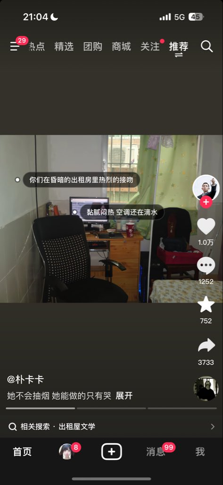

小虚空🍥
@tokerumaisurii
我想找个小男友在顶灯昏黄的出租房卧室里背对着千篇一律的白色木板门热烈地接吻，把本来就软成稀泥的床垫压得剧烈变形，方圆十公里内没有一家人有空调，饿了就用没明火的电陶炉灶台烧点饭，渴了直接喝自来水，只有给加湿器添的水才走一遍过滤壶，两个人的鞋子凑一锅洗衣机洗掉，北美出租屋也是出租屋。

lmbleeding
@lmbleedingovo
我这种人看不了出租屋文学 https://t.co/J9M6PDKOKi